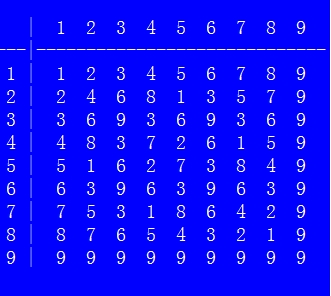
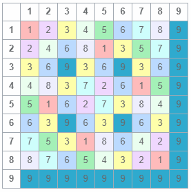
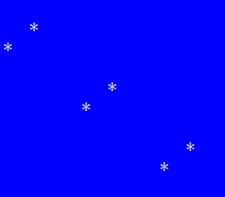

Lab 1: C
Please write the following two programs.
1. Vedic Square and Vedic Star
(1) Problem Description
The Vedic Square is a 9 × 9 table originating in ancient Indian mathematics. It is similar to a multiplication table for the numbers 1 through 9, except that each cell contains the digital root of the product of its row and column numbers, rather than the product itself.
To find the digital root of a non-negative integer, add its digits together. Repeat this process with the resulting sum until only one digit remains. That digit is the digital root of the original number. For example:
- The digital root of 1 is 1.
- The digital root of 10 is 1 (1 + 0 = 1).
- The digital root of 21 is 3 (2 + 1 = 3).
- The digital root of 48 is 3 (4 + 8 = 12; 1 + 2 = 3).
- The digital root of 198 is 9 (1 + 9 + 8 = 18; 1 + 8 = 9).
Note: Adding 9 to a positive integer does not change its digital root. Every positive multiple of 9 has a digital root of 9.
The following images show the Vedic Square.


(2) Vedic Star
The Vedic Square contains many geometric patterns and symmetries. Replace every occurrence of a particular digit with an asterisk (*) and all other digits with spaces. You will see a symmetric pattern emerge from the square.
(3) Programming Task
Write a program that first prints the Vedic Square and then prints the Vedic Star pattern for each digit from 1 through 9. The three examples below correspond to the digits 1, 2, and 3, respectively.

2. Elevator Problem
(1) Problem Description
An elevator is instructed to visit N floors in a specified order. It takes 6 seconds to move up one floor and 4 seconds to move down one floor. At each requested floor, it stops for 5 seconds.
Given a sequence of requested floors, calculate the total time required. The elevator starts at floor 0. After completing the sequence, it remains at the last requested floor and does not need to return to floor 0.
(2) Input
The input is a sequence of N + 1 non-negative integers. The first integer, N, specifies the number of requested stops. The next N integers give the floors to visit, in order.
(3) Output
Print the total time, in seconds, required for the elevator to complete the sequence of stops.
(4) Sample Input and Output
Example 1
Input:
1 2
Output:
17
Explanation: 6 × 2 + 5 = 17 seconds.
Example 2
Input:
3 2 3 1
Output:
41
Explanation: 6 × 2 + 5 + 6 × 1 + 5 + 4 × 2 + 5 = 41 seconds.